금형기능사 (2003-01-26 기출문제)
1과목: 임의구분
1. 다음 중 다이 셋트의 구성 요소가 아닌 것은?
- 펀치 홀더(punch holder)
- 생크(shank)
- 브로칭(Broaching)
- 가이드 포스트(guide post)
(정답률: 68%)

2. 나사 바이트의 각도를 측정하는 게이지는?
- 와이어 게이지
- 한계 게이지
- 센터 게이지
- 틈새 게이지
(정답률: 51%)
3. 분할다이의 특징으로 거리가 가장 먼 것은?
- 다이 파손시 수리가 용이하다.
- 균일한 클리어런스를 얻을 수 있고,조정도 가능하다.
- 기계가공을 쉽게 하기 위하여
- 제작 공정수를 줄이기 위하여
(정답률: 67%)
4. 다음 중 프레스의 안전 점검 사항이 아닌 것은?
- 클러치의 이상유무
- 안전장치의 이상유무
- 금형과 프레스의 능력이 적당한가를 확인
- 프레스 기계의 각부분에 녹슨 부분이 있는가를 점검
(정답률: 55%)
5. 재료의 두께가 1mm인 연강판을 사용하여 높이 80mm, 안지름 100mm의 원통형 용기를 드로잉 하고자 한다. 필요한 드로잉력은 얼마인가? (단, 인장강도는 35kgf/㎜2이다.)
- 0.895 ton
- 1.125 ton
- 8.795 ton
- 10.995 ton
(정답률: 32%)
6. 지름이 120 mm인 블랭크(소재)를 안지름 50 mm의 원형 용기로 드로잉 하였다. 이때의 드로잉비는? (단, 소재의 두께는 2 mm의 연강판이다.)
- 0.42
- 0.8
- 2.4
- 4.8
(정답률: 69%)
7. 소성가공의 종류에 해당되지 않는 것은?
- 판금가공
- 압연
- 전조
- 주조
(정답률: 69%)
8. 굽힘금형에서 스프링 백을 감소시키는 방법이 아닌 것은?
- 경도가 경한재료를 사용한다.
- 펀치하면에 도피홈을 준다.
- 펀치하면을 원호로 한다.
- 캠기구를 사용한다.
(정답률: 57%)
9. 전단각의 크기는 제품 및 재질에 따라 각각 다르나 일반적으로 몇도 이하로 하는가?
- 6° 이하
- 12° 이하
- 18° 이하
- 24° 이하
(정답률: 64%)
10. 맞춤핀(dowel pin)을 사용하는 목적에 대한 설명 중 옳지 않은 것은?
- 정밀 작업을 할 수 있다.
- 금형 부품의 복원조립을 한다.
- 금형 조립시 위치결정을 한다.
- 측압력의 이동방지를 할 수 있다.
(정답률: 41%)
11. 다음 러너리스(Runnerless)금형의 장점 설명중 가장 잘못된 것은?
- 성형품의 품질이 우수하다.
- 수지의 단가가 경감된다.
- 성형 사이클이 단축된다.
- 설계, 보수에 기술적인 어려움이 없다.
(정답률: 59%)
12. 스트레이트 톱 게이트라고도 하며, 성형품에 플로 마크가 발생하는 것을 막기 위하여 표준 게이트 대신에 사용하는 게이트는?
- 오버랩 게이트
- 팬 게이트
- 필름 게이트
- 디스크 게이트
(정답률: 57%)
13. 제품 투영면적이 100㎝2이고 사출압력이 400kg/㎝2일 때 형체력은 최소 얼마 이상이어야 하는가?
- 30ton
- 40ton
- 50ton
- 60ton
(정답률: 71%)
14. 일반적인 사출 성형가공의 성형 사이클로 맞는 것은?
- 사출 - 냉각 - 보압 - 금형열림
- 보압 - 사출 - 냉각 - 금형열림
- 금형열림 - 냉각 - 사출 - 보압
- 사출 - 보압 - 냉각- 금형열림
(정답률: 61%)
15. 투영 면적이 큰 성형품이 변형하기 쉬운 경우 다점 게이트로 하므로서 수축 및 변형을 적게 할 수 있는 게이트는?
- 핀 포인트 게이트
- 사이드 게이트
- 링 게이트
- 서브 마린 게이트
(정답률: 56%)
16. 사출성형기에서 형체력이 부족했을때 나타나는 현상은?
- 플래시 현상
- 크랙 현상
- 크레이징 현상
- 은줄 현상
(정답률: 54%)
17. 사출금형을 시험 사출하고자 할 때 시험조건으로 부적합한 것은?
- 시험사출시 사출압은 양산의 조건과 동일하게 함을 원칙으로 한다.
- 시험사출시 사용수지는 제품과 동일한 수지로 한다.
- 시험사출시 사출기계는 양산시 사용하는 것과 동일한 것으로 함을 원칙으로 한다.
- 시험사출시 냉각수 사용을 중지시킨다.
(정답률: 79%)
18. 사출성형기에 금형부착시 노즐 중심과 금형의 스프루 부시 중심을 맞추는데 사용되는 부품은?
- 가이드 핀
- 가이드 부시
- 스프루 부시
- 로케이트 링
(정답률: 50%)
19. 몰드 금형에 의해서 생산된 제품이 아닌 것은?
- TV케이스
- 전화기 케이스
- 나무의자
- 타이어
(정답률: 79%)
20. 전선피복, 고주파부품, 용기 튜브, 파이프 등의 소재로 제조방법에 따라 저밀도, 중밀도, 고밀도로 구분되는 수지는?
- ABS
- PP
- PE
- PS
(정답률: 43%)
2과목: 임의구분
21. 프레스 작업시 안전장치의 종류가 아닌 것은?
- 스위프가이드 장치
- 되돌림 장치
- 광선식 안전장치
- 롤러장치
(정답률: 65%)
22. 다음은 사출금형의 가공조립에 관한 사항이다. 이중 해당되지 않는 것은 어느 것인가?
- 살 두께의 수정은 코어형에 하는 것이 좋다.
- 냉각수 구멍은 제품부 가공전에 하는 것이 좋다.
- 제품부 연마는 오일스톤, 샌드페이퍼, 버프에 의해 연마한다.
- 캐비티 가공은 코어를 기준하여 가공한다.
(정답률: 50%)
23. 대형 금형의 소형구멍 뚫기에 사용되며 지름이 13mm이하인 구멍을 뚫을 때 사용되는 공구는?
- 핸드 드릴
- 강력 진동드릴
- 전기 해머드릴
- 탁상 드릴
(정답률: 63%)
24. 치공구 사용시 장점과 거리가 먼 것은?
- 생산제품의 정밀도 향상
- 제품검사 시간 단축
- 숙련자만 정밀작업이 가능
- 생산능력 향상
(정답률: 85%)
25. 머시닝센터에서 암나사를 가공하려고 한다. 탭의 피치가 1.25㎜일 때, 주축의 회전수를 300rpm으로 한다면 지령해야 할 이송속도 F 는?
- 300 ㎜/min
- 325 ㎜/min
- 350 ㎜/min
- 375 ㎜/min
(정답률: 57%)
26. 고주파 유도 가열 경화법의 장점이 아닌 것은?
- 표면 부분에 에너지가 집중하므로 가열시간이 짧다.
- 값이 싸므로 경제적이다.
- 가열시간이 길어 산화 및 탈탄의 염려가 없다
- 코일을 통과시키면서 가열한 것은 즉시 냉각시키면 연속작업을 할 수 있다.
(정답률: 66%)
27. 형태, 색깔 등이 완성품과 동일한 현물 크기 또는 축척된 크기의 모델은?.
- 검토 모델(study model)
- 제시 모델 (presentation model)
- 기초모델(master)
- 원형모델
(정답률: 54%)
28. 금형 부품의 표준화가 가져오는 이익이 아닌 것은?
- 납기단축
- 금형제작비 상승
- 제품정도향상
- 원가절감
(정답률: 76%)
29. 주조금형 작업시 안전사항으로 맞는 것은?
- 주조 작업시는 장갑을 착용하지 않는다.
- 안전화를 착용한다.
- 용융된 쇳물의 이송은 최대한 빠르게 한다.
- 방독마스크를 착용한다.
(정답률: 51%)
30. 금형가공중 방전가공의 안전으로 틀린 것은?
- 가공액의 높이를 최대한 낮게한다.
- 가공액의 빛깔이 변했을 때는 즉시 교환 한다.
- 무리한 작업은 금지한다.
- 장시간 무인운전을 하지 않는다.
(정답률: 84%)
31. 프레스 작업이 끝난후 페달에 U자형의 상자를 씌우는 이유는?
- 안전을 위해
- 먼지나 칩이 끼지 않도록
- 페달을 깨끗이 보호하기 위해
- 사람이 밟아 고장이 생기기 때문에
(정답률: 75%)
32. 마이크로미터 스핀들 피치가 0.5㎜, 딤블의 원주를 100등분하였다면 최소 눈금(mm)은?
- 0.001mm
- 0.0⑤mm
- 0.01mm
- 0.1mm
(정답률: 78%)
33. 초경 합금의 고정 방법이 아닌것은?
- 납땜에 의한 방법
- 나사에 의한 방법
- 마찰에 의한 방법
- 수축 끼워맞춤에 의한 방법
(정답률: 48%)
34. 금형부품 등을 측정 검사하는 곳의 조도는?
- 70Lux이상
- 150Lux이상
- 200Lux이상
- 300Lux이상
(정답률: 42%)
35. 일반적으로 리이머 가공여유를 얼마로 주는 것이 적당한가? (단, 리이머의 직경은 10mm이다.)
- 0.01 ∼ 0.⑤mm
- 1.2 ∼ 1.0mm
- 1.0 ∼ 0.8mm
- 0.3 ∼ 0.2mm
(정답률: 56%)
36. 다음 중 주철의 성장을 방지하는 방법으로서 올바르지 않는 항은?
- 조직을 치밀하게 할 것
- 크롬과 같은 내열원소를 첨가할 것
- 산화하기 쉬운 규소를 적게할 것
- 시멘타이트의 분해에 의할 것
(정답률: 63%)
37. 부품을 일정한 간격으로 유지하고 구조자체를 보강하는데 사용되는 볼트는?
- 기초볼트
- 아이볼트
- 충격볼트
- 스테이볼트
(정답률: 71%)
38. 스프링상수 K=2kgf/㎜ 인 원통형 코일스프링에 20㎏f의 인장하중이 걸려 있다면, 이때 스프링의 늘어남은 얼마인가?
- 10 ㎜
- 2 ㎜
- 0.2 ㎜
- 0.1 ㎜
(정답률: 69%)
39. 회전수가 1500rpm 의 2줄 웜이 잇수가 50인 웜 휠에 물려 돌아가고 있다. 이때 웜 휠의 회전수는?
- 30rpm
- 40rpm
- 15rpm
- 60rpm
(정답률: 36%)
40. Z1 = 35, Z2 = 88의 잇수인 2개의 스퍼기어가 내접하여 물려있다. 모듈 M=4이면 두기어의 중심 거리는?
- 102 mm
- 106 mm
- 212 mm
- 246 mm
(정답률: 44%)
3과목: 임의구분
41. Mg-Al계(마그네슘-알루미늄계)합금으로 복잡한 주물단조물등에 쓰이며 용해, 주조, 단조가 용이한 합금은?
- 도우메탈(Dow metal)
- 일렉트론(elektron)
- 하이드로날륨(hydronalium)
- 알민(almin)
(정답률: 40%)
42. 철광석을 용광로에서 정련하여 만들어진 철을 무엇이라하는가?
- 용철
- 순철
- 주철
- 선철
(정답률: 57%)
43. "프레스 금형에 사용되는 생크(shank)의 재료는 일반적으로 SM20C를 사용한다."의 내용에서 SM이란 무엇을 말하는 가?
- 쾌삭강
- 고속도강
- 기계 구조용 탄소강
- 일반 구조용 압연강
(정답률: 77%)
44. 베릴륨 청동 합금에 대하여 설명하였다. 설명 중 맞지 않는 것은?
- 구리에 2‾3%Be을 첨가한 석출경화성 합금이다.
- 피로한도, 내열성, 내식성이 우수하다.
- 베어링, 고급 스프링 재료에 이용된다.
- 산화하기 어렵고 가격이 싸다.
(정답률: 70%)
45. 구리 4%, 니켈 2%, 마그네슘 1.5%를 함유하는 알루미늄 합금은?
- Y합금
- 문쯔메탈
- 활자합금
- 엘린바
(정답률: 71%)
46. 일반적인 압축 가공법으로 대량 생산을 할 경우 바람직한 재료의 탄소함유량은 몇 % 이하 인가?
- 0.2
- 0.3
- 0.4
- 0.5
(정답률: 45%)
47. 어떤 재료의 단면적이 40㎜2이던 것이 시험 후 측정하였더니 38㎜2로 나타났다. 이 재료의 단면수축률은 몇 %인가?
- 5
- 10
- 15
- 95
(정답률: 63%)
48. 스테인리스강을 조직상으로 분류한 것이 아닌 것은?
- 마텐자이트계
- 오스테나이트계
- 시멘타이트계
- 페라이트계
(정답률: 65%)
49. 나사의 풀림 방지법으로 적당하지 않은 것은?
- 나비너트를 사용하는 방법
- 로크너트에 의한 방법
- 핀 또는 멈춤나사에 의한 방법
- 자동죔 너트에 의한 방법
(정답률: 61%)
50. 기계 몸체를 받쳐 주는 기둥의 단면에 발생하는 응력은?
- 비틀림 응력
- 압축 응력
- 인장 응력
- 전단 응력
(정답률: 61%)
51. 다음 선의 종류 중에서 특수한 가공을 실시하는 부분을 표시하는 선은?
- 굵은 실선
- 굵은 1점 쇄선
- 가는 실선
- 가는 1점 쇄선
(정답률: 68%)
52. 평화면에 수직으로 놓인 직선의 투상 설명으로 올바른 것은?
- 입화면에서 점으로 나타난다.
- 입화면에서 축소된 길이로 나타난다.
- 입화면에서 실제의 길이로 나타난다.
- 평화면에 실제의 길이로 나타난다.
(정답률: 58%)
53. 보기와 같은 구멍과 축이 조립상태에 있을 때 치수 기입 상태을 올바르게 설명된 것은?
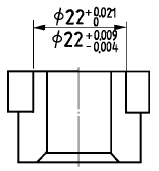
- 구멍의 치수는φ
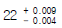
- 구멍의 치수는φ
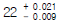
- 축의 치수는 φ
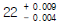
- 축의 치수는 φ
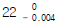
(정답률: 68%)
54. 다음과 같은 표면의 결 도시기호 설명 중 올바른 것은?
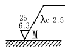
- M : 밀링가공에 의한 절삭
- 6.3 : 최대높이 6.3μm 거칠기 값
- 25 : 10점 평균 거칠기의 상한 값
- λc 2.5 : 커트 오프값 2.5mm
(정답률: 49%)
55. 다음 그림 중 스프링 와셔는 어느 것인가?
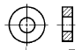
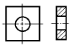
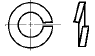
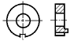
(정답률: 75%)
56. 보기 입체도의 정면도로 가장 적합한 것은?
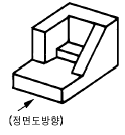
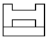
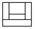
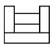
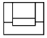
(정답률: 75%)
57. 보기 입체도의 화살표 방향 투상도로 가장 적합한 것은?
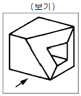
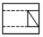
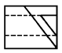
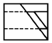
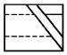
(정답률: 72%)
58. 원기둥의 한쪽부분만 중심축에서 45° 로 모따기한 보기와 같은 좌측면도에 가장 적합한 정면도는?
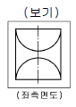
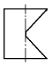
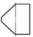
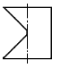
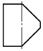
(정답률: 58%)
59. 치수가 50H7p6라 할 때의 설명으로 가장 올바른 것은?
- 구멍기준식 헐거운 끼워맞춤
- 축기준식 중간 끼워맞춤
- 구멍기준식 억지 끼워맞춤
- 축 기준식 억지 끼워맞춤
(정답률: 59%)
60. 기하공차의 정의와 도시에서 데이텀의 표적기호가 점일 때의 것은?
- ▨
- ⊙
- Ｘ
- ●
(정답률: 46%)